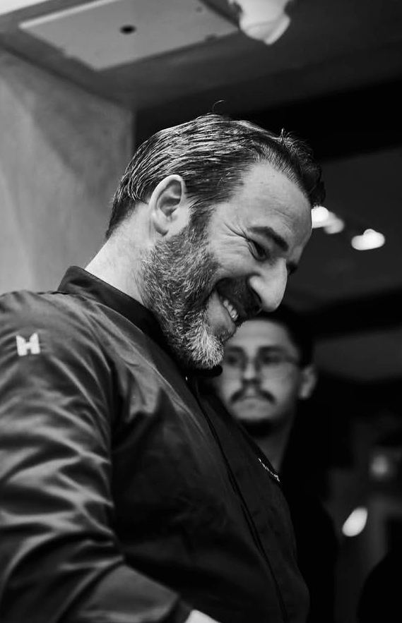
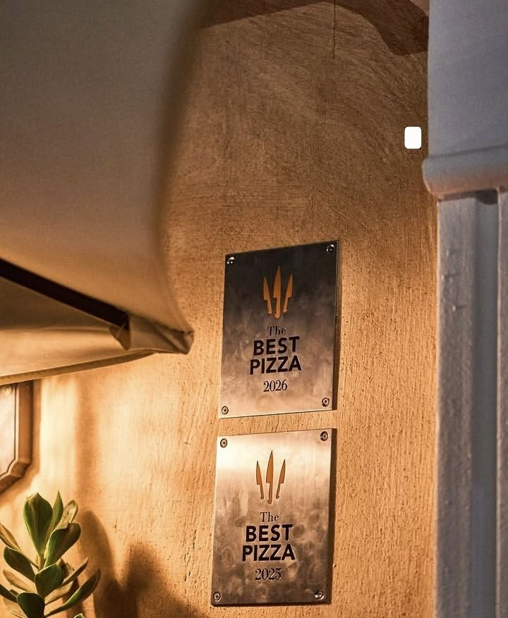
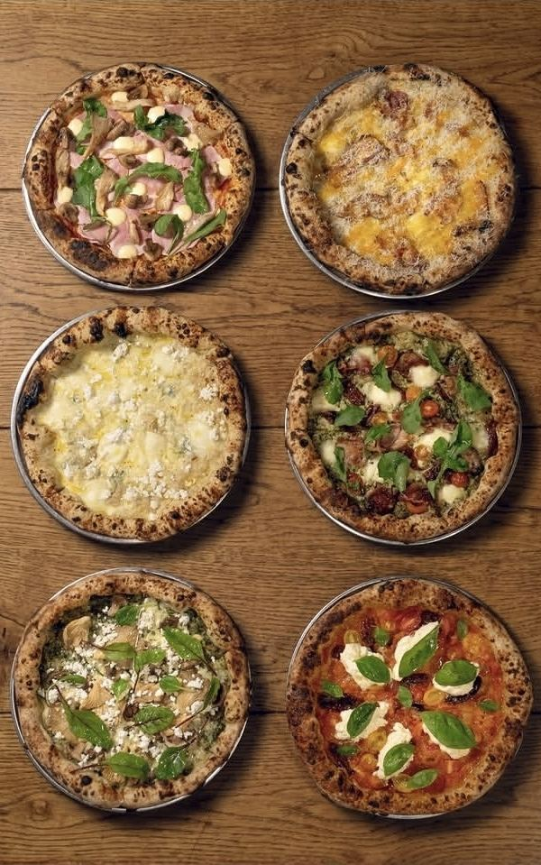
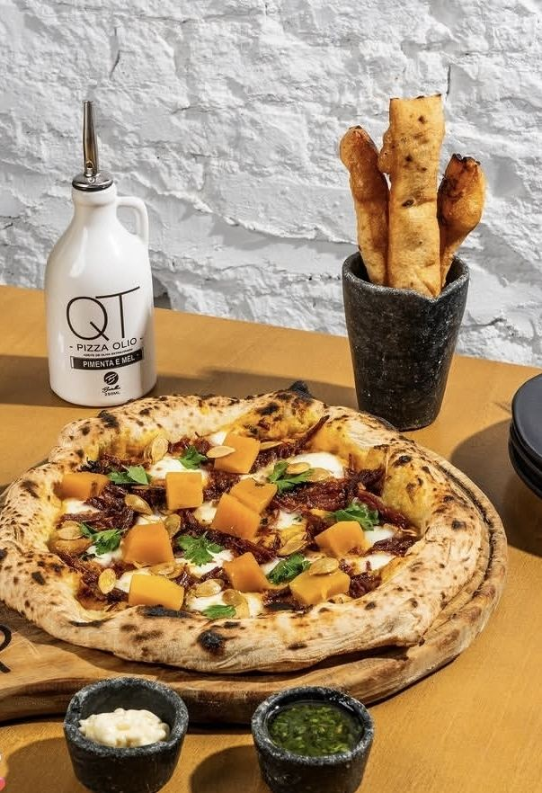
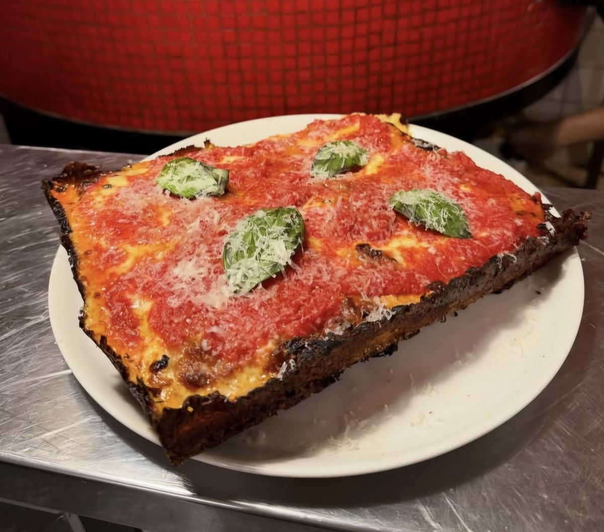

O que é?
Por décadas, falar em pizza de excelência era olhar, inevitavelmente, para a Itália. Esse cenário mudou de forma mensurável em 2026: cinco pizzaiolos que atuam no Brasil entraram para o The Best Pizza Awards, um dos rankings mais respeitados do setor — o "Oscar dos pizzaiolos" — colocando São Paulo e Rio de Janeiro no mapa mundial da pizza de alto nível.
É a combinação de dois movimentos simultâneos: reconhecimento internacional pela técnica clássica e experimentação de formato dentro de casa.
Origem
O Brasil sempre foi um gigante do consumo — o país viu cerca de 10 mil pizzarias abrirem entre 1962 e 2007, mas nos 12 anos seguintes (2008–2020), esse número saltou para mais de 73 mil novas casas. Em 2023, a produção diária de pizzas no país chegava a 3,8 milhões de unidades, sendo 870 mil só em São Paulo — que hoje é a segunda cidade que mais consome pizza no mundo.
Mas quantidade não é o mesmo que reconhecimento técnico internacional. Essa mudança começou a aparecer nos rankings de forma mais consistente a partir de 2024, até culminar no resultado de 2026.
O marco de 2026
Em 24 de junho, em Milão, o The Best Pizza Awards revelou sua quarta edição, com votos de mais de 500 jurados de 60 países avaliando técnica de fermentação, qualidade dos insumos, regularidade de forneamento, serviço e impacto cultural. Cinco brasileiros entraram no top 100 mundial:
| Posição | Pizzaiolo | Casa |
|---|---|---|
| 42º | Dani Branca | Soffio Pizzeria, SP |
| 51º | Fellipe Zanuto | A Pizza da Mooca, SP |
| 55º | Matheus Ramos | QT Pizza Bar, SP |
| 78º | Pedro Siqueira | Sìsì, RJ |
| 83º | André Guidon | Leggera Pizza Napoletana, SP |
Dani Branca, o melhor colocado, é italiano radicado no Brasil há mais de duas décadas — começou a carreira na Paestum Forneria, no interior de São Paulo, antes de assumir os fornos da Soffio. Fellipe Zanuto, um dos pioneiros do estilo napolitano na capital paulista, subiu cinco posições em relação ao ano anterior. Pedro Siqueira é um dos dois únicos representantes cariocas na lista, ao lado de Sei Shiroma, da Ferro e Farinha.


"De ex-engenheiro de som a pizzaiolo napolitano: André Guidon trocou de carreira em 2006, estudou em Nápoles na Associação Verace Pizza Napoletana, e voltou ao Brasil em 2013 para abrir a Leggera." Trajetória compilada de CNN Brasil e The Pig Journal
O domínio da Leggera
Se o The Best Pizza Awards mede pizzaiolos individuais, o 50 Top Pizza Latin America 2026 mede casas — e aqui o domínio brasileiro é ainda mais evidente: 22 das 50 melhores pizzarias da América Latina são brasileiras, com São Paulo concentrando seis casas no ranking, quatro delas no top 10.
No topo de tudo está a Leggera Pizza Napoletana, de André Guidon — eleita a número 1 da América Latina pelo terceiro ano consecutivo. O critério de avaliação é rigoroso: jurados anônimos visitam as pizzarias de forma independente e pagam a própria conta.


Enquanto isso, dentro de casa: novos estilos ganham espaço
Ao mesmo tempo em que a tradição napolitana brasileira vence prêmios lá fora, a cena doméstica está longe de ser monolítica. Um dos movimentos mais visíveis é a chegada da pizza estilo Detroit — massa alta e fofinha em bandeja retangular, criada originalmente em 1946 na fábrica automotiva de Detroit (Michigan), com muito queijo até a borda, formando aquela casca crocante e caramelizada característica.

Casas como a Paralela Pizza, em São Paulo, já assumem o estilo como identidade própria — descrevendo-se literalmente como "Estilo Detroit, fermentação natural" na própria bio. A proposta mistura o formato americano com a técnica de fermentação natural que já é padrão de qualidade entre os pizzaiolos brasileiros premiados.
Por quê agora
Três fatores explicam o momento:
- Maturação técnica geracional: os pizzaiolos premiados em 2026 não são estreantes — Dani Branca está no Brasil há mais de 20 anos, André Guidon desde 2013. O reconhecimento é resultado de uma década de refinamento técnico, não um pico isolado.
- Volume que virou laboratório: com 3,8 milhões de pizzas produzidas por dia, o Brasil tem escala suficiente para que subculturas de nicho coexistam e se profissionalizem em paralelo ao mercado de massa.
- Circulação internacional de referência: chefs como Guidon estudaram formalmente na Itália e trouxeram certificação técnica para casa — ao mesmo tempo em que casas importam formatos americanos, mostrando um fluxo de influência em várias direções.
Prognóstico
A entrada consistente de brasileiros em rankings internacionais nos últimos anos — não um resultado isolado de 2026 — sugere que o momento tem raiz estrutural, não é sorte de uma edição. A combinação de alto consumo doméstico com formação técnica internacional tende a se manter.
Nosso palpite: o próximo capítulo não deve ser mais reconhecimento pela pizza napolitana clássica — isso já está consolidado. A aposta é que os próximos anos tragam mais hibridismo de estilo (napolitana com técnica brasileira de insumo, Detroit com fermentação natural) como a verdadeira assinatura da pizza brasileira daqui pra frente.